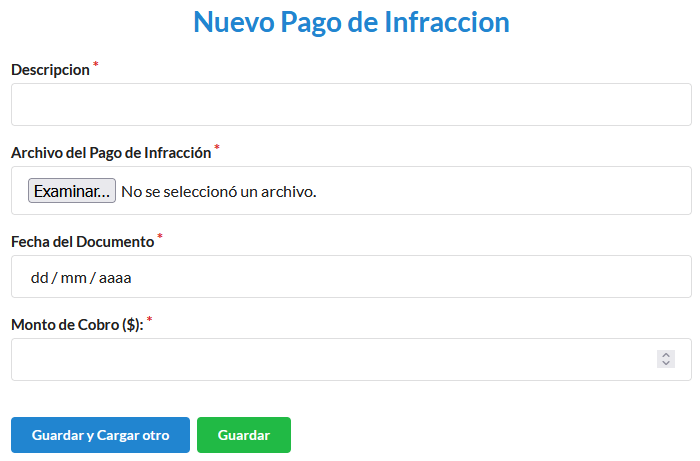

Canon Infracción
Cómo crear un nuevo cobro de infracción
Desde el listado de permisos seleccionamos el Permiso al cual le vamos a realizar el Cobro de infracción.

Nos dirigimos al icono Más Acciones el cual nos despliega opciones, seleccionamos Nuevo Cobro de Infracción.

Para terminar registrar el Cobro de infracción debemos completar Descripción, Archivo, Fecha del documento, Monto del Cobro.

Cómo crear un nuevo pago de infracción
Desde el listado de permisos seleccionamos el Permiso al cual le vamos a realizar el Pago de infracción.
Nos dirigimos al icono Más Acciones el cual nos despliega opciones, seleccionamos Nuevo Pago de Infracción.
Para terminar registrar el Pago de infracción debemos completar Descripción, Archivo, Fecha del documento, Monto del Cobro.
